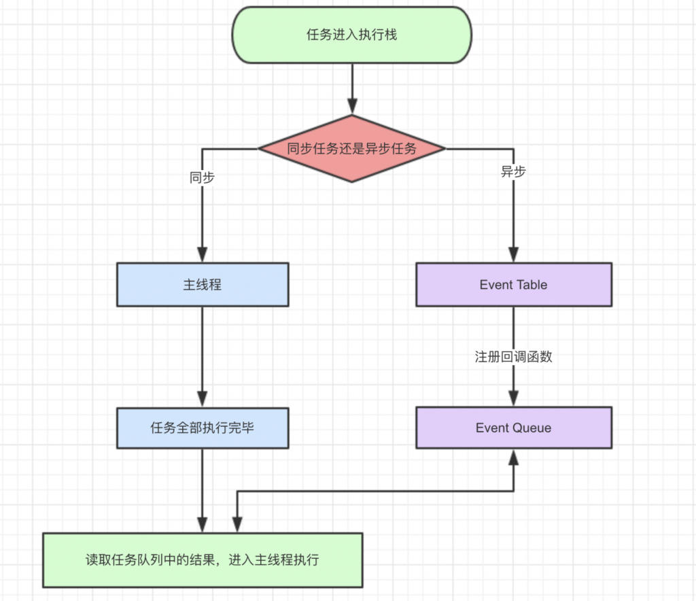

前言
地球人都知道，javascript从诞生之日起就是一门单线程的非阻塞的脚本语言。这是由其最初的用途来决定的：与浏览器交互。
单线程意味着，javascript代码在执行的任何时候，都只有一个主线程来处理所有的任务。
而非阻塞则是当代码需要进行一项异步任务（无法立刻返回结果，需要花一定时间才能返回的任务，如I/O事件）的时候，主线程会挂起（pending）这个任务，然后在异步任务返回结果的时候再根据一定规则去执行相应的回调。
单线程是必要的，也是javascript这门语言的基石，原因之一在其最初也是最主要的执行环境——浏览器中，我们需要进行各种各样的dom操作。试想一下，如果javascript是多线程的，那么当两个线程同时对dom进行一项操作，例如一个向其添加事件，而另一个删除了这个dom，此时该如何处理呢？因此，为了保证不会 发生类似于这个例子中的情景，javascript选择只用一个主线程来执行代码，这样就保证了程序执行的一致性。
当然，现如今人们也意识到，单线程在保证了执行顺序的同时也限制了javascript的效率，因此开发出了web worker技术。这项技术号称让javascript成为一门多线程语言。
然而，使用web worker技术开的多线程有着诸多限制，例如：所有新线程都受主线程的完全控制，不能独立执行。这意味着这些“线程” 实际上应属于主线程的子线程。另外，这些子线程并没有执行I/O操作的权限，只能为主线程分担一些诸如计算等任务。所以严格来讲这些线程并没有完整的功能，也因此这项技术并非改变了javascript语言的单线程本质。
可以预见，未来的javascript也会一直是一门单线程的语言。
话说回来，前面提到javascript的另一个特点是“非阻塞”，那么javascript引擎到底是如何实现的这一点呢？答案就是今天这篇文章的主角——event loop（事件循环）。
javascript事件循环
js是单线程，就像学生排队上厕所，学生需要排队一个一个上厕所，同理js任务也要一个一个顺序执行。如果一个任务耗时过长，那么后一个任务也必须等着。那么问题来了，假如我们打开一个网页，网络请求耗费大量时间，难道网页就要一直卡着等待请求完毕吗？因此有了任务队列的概念。
所有的任务可以分为同步任务和异步任务，同步任务，顾名思义，就是立即执行的任务，同步任务一般会直接进入到主线程中执行；而异步任务，就是异步执行的任务，比如ajax网络请求，setTimeout定时函数等都属于异步任务，异步任务会通过任务队列的机制(先进先出的机制)来进行协调。具体的可以用下面的图来大致说明一下：

解读：
- 同步和异步任务分别进入不同的执行”场所”，同步的进入主线程，异步的进入Event Table并注册函数
- 当指定的事情完成时，Event Table会将这个函数移入Event Queue。
- 主线程内的任务执行完毕为空，会去Event Queue读取对应的函数，进入主线程执行。（js引擎存在monitoring process进程，会持续不断的检查主线程执行栈是否为空，一旦为空，就会去Event Queue那里检查是否有等待被调用的函数。）
- 上述过程会不断重复，也就是常说的Event Loop(事件循环)。
宏任务和微任务
以上的事件循环过程是一个宏观的表述，实际上因为异步任务之间并不相同，因此他们的执行优先级也有区别。不同的异步任务被分为两类：微任务（micro task）和宏任务（macro task）。
macro task大致包括：
script（整体代码）setTimeoutsetIntervalsetImmediate(Node.js 环境)I/OUI render
micro task大致包括
process.nextTick(Node.js 环境)Promiseasync/await（promise的语法糖）MutationObserver(html5新特性)
整体执行状况如下图
详细地说：一次事件循环流程，JS首先从宏任务队列中取出第一个宏任务（script整体代码）加入到执行栈开始执行，如果在执行过程中又产生了宏任务，那么这个任务将在下次事件循环中才能执行，如果在执行过程中产生了微任务，那么当执行栈为空时，就会取出微任务队列中的全部任务，放入执行栈执行，如果在执行微任务时又产生了宏任务，则也要在下下次事件循环中才能执行，如果又产生了微任务，那么这个微任务将会在这次事件循环中执行，如此反复，就形成了事件循环。
简单的理解：一次事件循环流程：取出一个宏任务开始->执行栈执行->执行栈为空->微任务队列执行->微任务队列为空->回到下一个宏任务进行下一轮循环。
真题实战
console.log('script start')
async function async1() {
await async2()
console.log('async1 end')
}
async function async2() {
console.log('async2 end')
}
async1()
setTimeout(function() {
console.log('setTimeout')
}, 0)
new Promise(resolve => {
console.log('Promise')
resolve()
})
.then(function() {
console.log('promise1')
})
.then(function() {
console.log('promise2')
})
console.log('script end')
// 输出：script start -> async2 end -> Promise -> script end -> promise1 -> promise2 -> async1 end -> setTimeout上边代码的输出是在Chrome73前的版本中，Chrome73V8引擎做了一些优化，所以会略有不同。
流程分析：
- 执行第一个宏任务（第一个 script 标签的代码是第一个宏任务），输出
script start； - 执行
async1,内部调用async2函数，await行代码从右向左执行，因此输出async2 end，此时async2返回Promise.resolve(undefined)，然后碰到await关键字跳出async1函数； - 继续执行碰到定时器，产生一个新的宏任务；
- 执行
Promsie，输出Promise，遇到then关键字，产生第一个微任务； - 继续执行代码，输出
script end； - 当前宏任务执行完毕，跳回到
async1方法内，执行await,此时await Promise.resolve()就类似于Promise.resolve(undefined).then(res => console.log(async1 end),此时执行到这把then的回调推入微任务队列，产生第二个微任务。（实际上老版本的引擎会产生被包裹两层微任务，中可以这样简单理解，具体可以戳「译」更快的 async 函数和 promises，这篇文章也可以解释为什么新的V8引擎输出结果会不同）。 - 接着开始清空微任务列表，首先输出第一个微任务
promise1，此时会创建第三个微任务promise2； - 到了6中产生的第二个微任务，执行后发现里边包了一个微任务，推入到微任务列表；
- 执行7中的第三个微任务
promise2，最后来到8中产生的微任务，此时await终于结束，输出async1 end; - 第一轮EventLoop完成，执行第二轮EventLoop。执行
setTimeout中的回调函数，输出setTimeout。
尾声
javascrit的事件循环是这门语言中非常重要且基础的概念。清楚的了解了事件循环的执行顺序和每一个阶段的特点，可以使我们对一段异步代码的执行顺序有一个清晰的认识，从而减少代码运行的不确定性。合理的使用各种延迟事件的方法，有助于代码更好的按照其优先级去执行。个人看了多篇文档及博客，筛选出一些信息放到这篇文章中，期望用最易理解的方式和语言准确描述事件循环这个复杂过程。
文章推荐
这篇文章覆盖了堆栈、上下文等概念，也包括事件循环，
await/async等知识。
关于
async/await知识的文章
8张图帮你一步步看清 async/await 和 promise 的执行顺序
前两篇多多少少有点不清楚的地方，有的表述有点小问题，大家要带着批判的态度来接受，第三篇还是很不错的，讲了关于async/await在不同的V8版本顺序不同的问题，第四篇就是更加详细的讲解，虽然看着可能有点吃力。